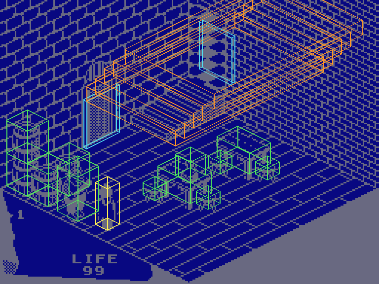

| Movement and collision |
Everything in a Fairlight room -- the knight, the creatures, the things lying about, the doors, the furniture, the floor and the walls -- is a box, and moving is trying a box in a new place against every other box. There is no separate map of the room for collisions: the drawing is only a picture, and what the knight stands on, walks into, climbs and pushes are the object records. This page is how a move is made, from the direction byte to the gravity that is added to it, the test against the boxes, what happens when it fails, and what that gives: walls, floors, stairs, pushing, riding, jumping and falling.
A direction is a byte with a bit for each way, the same for every object (its +13 on the ground, +18 in the air, and the copies the move works with):
| Bit | Means |
|---|---|
| 0 | turn back when stopped, rather than stop |
| 1 | rising: no gravity this pass |
| 2 | down +6 (H to ENTER; the stick left) |
| 3 | up +6 (Y to P; the stick right) |
| 4 | up |
| 5 | down: gravity |
| 6 | up +8 (Q to T; the stick up) |
| 7 | down +8 (A to G; the stick down) |
The knight's keys (read in KNIGHT_CONTROLS) set one of the four floor directions; a later test wins, so he never walks diagonally, though other things do. A step (STEP_ALONG_X and the two after it) is two units along one floor axis, one along each of the two for a diagonal, and always two up or down. On the screen, up +6 goes up and to the right, up +8 up and to the left.
A record's box is a corner and three sizes: from +6 for +9 along +6, from +8 for +11 along +8, and from its top, +7, down +10 (read in TEST_ONE_RECORD, the author's BB2). Two boxes meet when they overlap along all three axes, each test strict, so boxes that only touch do not. Room 2's records, their boxes drawn over the room:

Room 2, dimmed, with the box of every record from the knight's on drawn over it, projected the way ISO_MOVE moves sprites: the knight, objects with sprites, doors, invisible steps (kind 3). The steps of the stairs are boxes the drawing's object list puts down; nothing draws them.
FIND_OBSTACLE walks the records in use from the last down to the first and stops at the first whose box meets the one being tried, leaving out the mover's own and anything carried or gone (a door always counts). The first six records (FIXED_RECORDS) are the room's own box -- in room 2, read in the running game:
| Record | What | Corner | Size | Set by the patch |
|---|---|---|---|---|
| 1 | the floor | 50, 50, 50 | 255 by 10 by 255 | its top, +7 |
| 2 | the ceiling | 50, 180, 50 | 255 by 10 by 255 | its top, +7 |
| 3 | a wall across +6 | 178, 255, 50 | 10 by 255 by 255 | +6 |
| 4 | the other | 40, 255, 50 | 10 by 255 by 255 | +6 |
| 5 | a wall across +8 | 50, 255, 40 | 255 by 255 by 10 | +8 |
| 6 | the other | 50, 255, 174 | 255 by 255 by 10 | +8 |
So an object stands on the floor when its foot, +7 less +10, is at 50: the floor's box is ten high with its top there, and the step down that gravity asks for meets it.
Every object's update ends in the same code (ANIMATE_AND_MOVE). There, unless the direction has bit 1 (rising), the up bit is taken out -- ANDed with $EF from $FF8B -- and down is added -- ORed with $20, the top six bits of $23 at $FF85. Both are constants among the variables: a new game restores them from the master copy, and a search of the code for every instruction that could store into either found none. So everything that is not rising tries to fall two units every pass, and a floor, a table or another object is what stops it. That is also what makes a thing lying on the floor cost time every pass (the pass traced): its fall is tried, and stopped, again and again.
A step down sets bit 7 of the state, in the air. While it is set the object's own case is not run at all: it goes on the way +18 says, and a fall keeps only the down bit there, so everything falls straight down, the knight at the end of a jump too. The air ends when the fall is stopped.
When the tried box meets another record, BUMPED deals with doors (for the knight, a way to another room) and OBJECTS_MEET with what the two objects do to each other (the creatures page); what is left comes to BLOCKED_MOVE (MEET_DECOY). It works out how much of the move that one object stops, trying from where the mover was:
Then what is left of the move is tried again, and may meet something else. Three of the collisions do more:
The knight put at 120, 78, 160, at the foot of the stairs, with Y held (up +6), in the simulator when this page was built -- his +6 and his top, +7, after each pass:
| Pass | +6 | +7 | |
|---|---|---|---|
| 1 | 122 | 78 | |
| 2 | 124 | 78 | |
| 3 | 126 | 78 | |
| 4 | 128 | 78 | |
| 5 | 130 | 78 | |
| 6 | 132 | 78 | |
| 7 | 132 | 78 | in the air |
| 8 | 132 | 80 | in the air |
| 9 | 132 | 82 | in the air |
| 10 | 132 | 84 | |
| 11 | 134 | 82 | in the air |
| 12 | 136 | 82 | |
| 13 | 138 | 82 | |
| 14 | 138 | 82 | in the air |
| 15 | 138 | 84 | in the air |
| 16 | 138 | 86 | in the air |
| 17 | 138 | 88 | |
| 18 | 140 | 86 | in the air |
| 19 | 140 | 84 | in the air |
| 20 | 142 | 84 | |
| 21 | 144 | 84 | |
| 22 | 144 | 84 | in the air |
| 23 | 144 | 86 | in the air |
| 24 | 144 | 88 | in the air |
| 25 | 144 | 90 | |
| 26 | 146 | 88 | in the air |
| 27 | 148 | 88 | |
| 28 | 150 | 88 | |
| 29 | 150 | 88 | in the air |
| 30 | 150 | 90 | in the air |
Each time he walks into the next step he stops, goes up for three passes, falls back two onto the step and walks on: 12 units higher after 30 passes. The steps are boxes of kind 3, 10 high and each a little higher than the one before, laid over each other.
The knight put behind one of room 2's stools (record 14, +16 = 19: weight 3) and walked into it with Y. The rule gives it 18 less 19, plus 6: 5 passes of coasting a push. Measured, the knight's +6, the stool's, and its countdown (+15) while it coasts:
| Pass | Knight's +6 | Stool's +6 | Its +15 | |
|---|---|---|---|---|
| 1 | 118 | 130 | ||
| 2 | 120 | 130 | ||
| 3 | 122 | 130 | ||
| 4 | 122 | 132 | coasting | 4 |
| 5 | 124 | 132 | ||
| 6 | 124 | 134 | coasting | 4 |
| 7 | 126 | 136 | coasting | 3 |
| 8 | 128 | 138 | coasting | 2 |
| 9 | 130 | 138 | ||
| 10 | 130 | 140 | coasting | 4 |
| 11 | 132 | 142 | coasting | 3 |
| 12 | 134 | 144 | coasting | 2 |
The stool moves ahead of him two units a pass while it coasts, and he catches it up and pushes again.
SPACE or SYMBOL SHIFT (KNIGHT_CONTROLS) makes the knight's direction his walking one with up and rising added, +15 = 8 and his state 5. For eight passes CHE3D's state-5 case moves him up two a pass without gravity, the way he was walking; then he is state 8 again and falls. SPACE for one pass in room 29, when this page was built:
| Pass | State | In the air | +7 (his top) |
|---|---|---|---|
| 1 | 5 | 80 | |
| 2 | 5 | 82 | |
| 3 | 5 | 84 | |
| 4 | 5 | 86 | |
| 5 | 5 | 88 | |
| 6 | 5 | 90 | |
| 7 | 5 | 92 | |
| 8 | 5 | 94 | |
| 9 | 8 | yes | 92 |
| 10 | 8 | yes | 90 |
| 11 | 8 | yes | 88 |
| 12 | 8 | yes | 86 |
| 13 | 8 | yes | 84 |
| 14 | 8 | yes | 82 |
| 15 | 8 | yes | 80 |
| 16 | 8 | yes | 78 |
| 17 | 8 | 78 |
Up 16 in 8 passes, and down again. A jump is how the knight goes up through a hole in a ceiling -- a door whose way is up -- and over low things.
The knight counts the passes he falls for ($FF94, at the commit in ANIMATE_AND_MOVE); when he lands, his update (KNIGHT_UPDATE) takes a LIFE point for every pass over 20 -- two units a pass, so a fall of more than 40. Dropped from above room 29's floor in the simulator when this page was built:
| Height | Passes falling | LIFE by the rule | LIFE lost |
|---|---|---|---|
| 30 | 15 | 0 | 0 |
| 40 | 20 | 0 | 0 |
| 50 | 25 | 5 | 5 |
| 60 | 30 | 10 | 10 |
On the first pass after a room is entered (bit 2 of GAME_FLAGS) nothing moves: each object's direction is cleared, but all three axes are marked as moving, so the test runs on a box one unit up +6, two down and one down +8 from where it is, and whatever that meets is dealt with as usual; then the object is only drawn. What the offset box is for has not been worked out.
Ville Krumlinde's disassembly reads the sizes as half-widths about a centre; the box test compares against the corner and the corner plus the size, and the pick-up's search box, measured in stage 2, reaches exactly as far as a corner-and-size box would. He finds no code that makes things fall, and leaves open what holds them up: gravity is the down bit forced into every direction that is not rising, applied by the ordinary step, and floors are the fixed records and the invisible boxes. His assembler source writes the minus-20 step through the records as a load of the variable at $FFEC; it is the number, which only looks like the address.